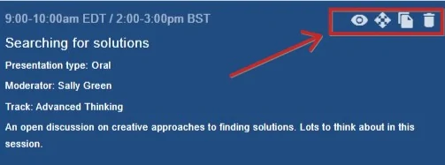
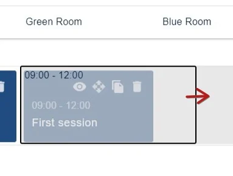
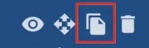
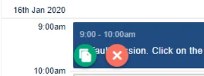
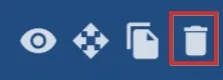

Amending, deleting and copying a session
For event organisersNot an organiser?
If you wish to edit a session, click on your chosen session and continue as with creating a session.#
You will notice the four icons to the top right of each session. From left to right:
1) Preview - click to see how the session will look to a user.
2) Move session
3) Copy session

Move a session
To extend the session across columns, click on the Move icon, then drag the side border(s) to your required time slot. The session must be dragged to an empty time slot.

Copy a session
The thrd icon is the copy icon. This is a quick way to create a new session if several of the details can be duplicated.
Click on the icon.

Click in the time slot where you would like the session to be copied to. Click the green copy icon when you're done, or the red cross to cancel.

Deleting a session#
To delete a session, click on the bin icon. NB - you cannot delete a session with abstracts attached to it.


Did this page solve it?
Thanks — this helps us fix it.
Didn't solve it? Ask our support team
No question is too small, and there's no charge for asking. Raise a ticket and someone who knows the software will pick it up.